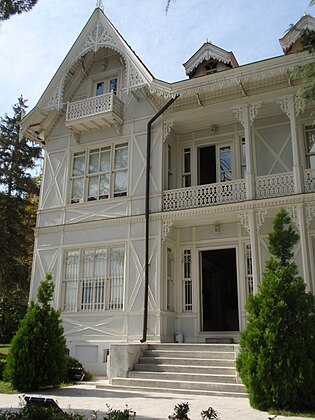

Bursa'nın Osmangazi ilçesinde, Çekirge Caddesi üzerinde bulunan köşkün yapımı 1895'te tamamlandı.[2] Yapının mimarı Miralay Mehmet Bey'dir. Aynı zamanda Mustafa Kemal Atatürk'ün emriyle yaptırılmış olan Çelik Palas'ın hemen yanında yer almaktadır. Atatürk'ün Bursa'yı ikinci ziyaretinde Bursa Belediyesi bu binayı mimarı Miralay Mehmet Bey'den satın alarak[3] Atatürk'e armağan etmiştir ve bundan sonraki Bursa ziyaretlerinde Atatürk bu köşkte kalmıştır. 1 Şubat 1938 tarihinde Atatürk, Bursa Belediye Başkanına verdiği mektupta Bursalıların kendisine karşı gösterdikleri sevgiye teşekkür etmiş, kendisine hediye edilen bu köşkü belediyeye bağışladığını yazmıştır.[1]
Köşk 1965 yılında onarıma girdikten sonra 29 Ekim 1973 tarihinde Cumhuriyet'in 50. yılında müzeye dönüştürülerek Atatürk Müzesi adıyla ziyarete açılmıştır.
19. yüzyıl Fransız mimarı stilinden etkilenerek yapılan bu binada ince ahşap işçilikler bulunmaktadır. Bursa'daki nadir sivil mimari örneklerden biridir. Geniş bir bahçede bulunan Atatürk Köşkü, üç kattan oluşmakta ve köşkün manzarası Bursa Ovası'na bakmaktadır.
Bursa'daki nadir sivil mimari örneklerden biri olan köşkün salon ve odalarında Atatürk'ün kullandığı eşyalar sergilenmektedir. İkinci katta Atatürk'ün yatak odası, çalışma salonu ve banyo bölümleri bulunmaktadır. Bodrum kat mutfak ve hizmetliler için, çatı katı ise Atatürk'ün belgeliği olarak kullanılmıştır.[4]
